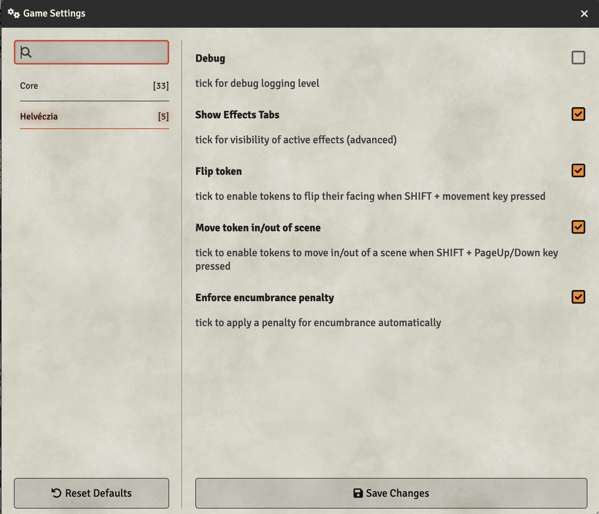

Helvéczia
Unofficial system for Foundry VTT
Introduction
This is an unofficial, third-party implementation of the excellent Helvéczia core rules, copyright Gabor Lux.
You need to get the Helvéczia rules in order to play. You will also find a wealth of inspiration for your games in the rules (and especially the excellent box set), too.
For further documentation on how to use Foundry VTT please go to Foundry VTT Knowledge base.
Installation
You'll need a Foundry VTT License or GM access to a Foundry VTT server.
- Launch Foundry VTT.
- Go to the Game Systems tab, then click Install System.
-
Find
'Helvéczia'and click Install. - Create World using the Helvéczia system.
Settings
The System settings are to control system-wide behaviours, and you can access them under the Configure Settings dialog from the Foundry VTT sidebar.

- Debug
-
In the event that something seems to be broken, switch on debugging to help identify the problem. If you raise
an issue on GitHub with the system, this will help identify what the problem is.
- Show effects tab
-
The Helvéczia system uses the Foundry VTT Active Effects to model the game mechanics
of various class, peoples and skills, but it's possible to add effects directly to characters and any items.
This can enable you to create your own custom effects. In the future, I'll wrap a more user-friendly
interface over this, but for now, you can get to these effects by
ticking this box. It will add a new tab (for the GM) to character and item sheets.
For advanced users only!
Characters
Character Generation
When you create a new Character and give them a name, you will be presented with a clean character sheet. This defaults to the character starting at level 2 (with 2000 experience points) and a portrait (which you can change by clicking on it). You also have a button to generate two sets of ability statistics, as per the rules, which you will get to choose one set of.
Here, we want to make Pascal a student, so we choose option B as it has better intelligence,
Once chosen, the abilities are displayed, plus the saving throws, and the ability bonuses. We then need to click the button to choose our origins and class.
We want to make Pascal French, and a student. Once chosen, the bonuses from the ethnic origin and class are applied. We then need to click the die that will be flashing to generate initial hitpoints. Because we chose to be a student, we only get to roll a d6.
Your choices are logged as a Chat Message to the GM...
Now all initial abilities and derived values are generated.
We can then go onto select skills.
Skills
The Skills tab shows what current skills the character has mastered, either by virtue of their origins or class, or what they have learned subsequently.
Because Pascal is a Student, he has already been assigned the Student skills of Spells and Doctorate
He is also allowed two randomly assigned Science Skills which you can click the button to generate.
Once those are assigned, we still have 2 more skill slots to choose. We can get them from the Skill Compendium by clicking on the Compendium Packs sidebar tab, clicking on Skills and then dragging our choices from there onto our character sheet.
Here, we have had Geometry and Anatomy assigned as our Science skills, and we have added two magical skills - Alchemy and Cryptography.
A skill check can be made by hovering over the skill and clicking on the D20 that appears.
For all checks. you will be presented with a dialog giving you the chance to select the difficulty level of the check, and any situational modifiers that might apply. You only need to add anything specific to the situation, as all other modifiers due to level and ability will be automatically applied.
The result will be displayed as a Chat Message. Here, poor Pascal failed his Alchemy check, despite having a total of +3 bonus to his roll!
Possessions
The Possessions tab shows the articles of equipment, armour, weapons, etc. the character has, assigned to the columns of what is Worn, Carried and available on their Mount, as per the rules.
Pascal was given 7 Thalers on his generation, so this appears below, in the Wealth section.
To add various weapons, armour and other possessions, simply open the relevant Compendium Pack and drag the item onto the character sheet. Don't forget to make a note of the costs and deduct from your wealth manually.
Here we have given Pascal a Fur Coat for protection (which has automatically increased his AC by +3 when dragged into the Worn column), and a Pistol as a weapon.
We have also dragged a default starting Spell Book for him.
We have updated his Wealth to reflect these expenses.

Combat
Now we have a weapon, it is worth looking at the Combat tab. Only weapons that are in the Worn column on the Possessions tab will appear here.
By default there is always one's Fists, so an unarmed combat entry also appears here.
By clicking on an item, a summary of that item will appear. Here we can see the various details of a pistol: It is Ranged,
has an Attack bonus of +2, does the significant damage of 1d10X (meaning 10's explode for another roll),
a critical is scored on a natural roll of 20, and would do X3 (triple) damage in that event.
To attack with his pistol, you can click on the D20 that appears when you hover on the weapon.
You will be presented with a check dialog as usual. If you have an enemy targeted already (click and press T on their Token)
then their AC will automatically be used as the target for the roll.
If the roll is successful, then damage will automatically be rolled.
Here it seems Pascal scored a hit, but not a critical success.
If a natural roll of the weapons critical range is rolled, then a potential crit has occurred, and the roll message will give the attacker a button to press to see if a crit really has occured. If it has, then the damage with the multiplier is then rolled.

As per the rules, if another natural crit is rolled, this means instant death, and an appropriate message would be displayed!
Class
Since Pascal is a Student, a Student tab is present. This tab would be display the respective class details for whichever class the character has chosen.
Each class tab shows a description of the class, and any specialisms chosen. Both Students and Clerics have spells as a specialism, so this tab also shows the list of spells that Pascal has memorized.
For each spell level, there is a section, with a header that shows:
- current number of spells memorized,
- maximum number of spells that can be memorized,
- how many of those are bonus spells, which can be retained and rememorized.
For Clerics, you would randomly roll for your list of starting spells and then drag each of them from their respective Compendium pack.
However, for Students, they start with a random selection in a Spellbook. A starting Spellbook is provided as an example, but you should edit the list in the one provided by dragging them onto the description of the book:
Once you have a spellbook populated, you can drag that onto your character sheet and it will appear in their possessions. To then memorize a spell, open the spellbook and drag the relevant spell from the page onto the sheet.
Here we have memorized two spells, and selected one of those to be the single Level 1 Bonus spell, but clicking the radio button.
To cast a spell, click on the magic wand icon. Bonus spells have a little "battery" icon that is either full or empty depending on whether it is memorized or not.To rememorize a bonus spell, click on the empty battery icon to make a Temptation check and hopefully restore the spell.
They also have the padlock icon to indicate they are special and should not be simply removed.
Non-bonus spells, when cast, will simply disappear from your memorized list.
The act of memorizing or casting a spell will be recorded as GM whisper messages.
Virtue
When generated, the character's initial virtue is randomly rolled and set. Pascal's was set to 11...pretty average virtue. If Pascal was of high virtue, he would not be able to memorize any spells!
However, as the GM decides on actions throughout the session, they should then drop Deeds that represent the relevant vice or virtue relating to that deed, which will affect Pascal's virtuous (or not) state.
To do this, we can create a new Deed and fill in the details to represent the magnitude and detail of the act.
When dragged onto the character sheet, this will then appear in the Sins column, and have an automatically negative effect on their virtue.
To atone for sins and recover virtue, as per the rules, click on the dice icon by the Deeds header to randomly roll how many points of virtue are recovered.
The largest sins will be automatically removed that can be, based on the roll.
NPCs
NPC Generation
Creating an NPC (classed or non-classed) is a similar process. Create a new npc actor type and you will be presented by an initial basic NPC.
Here we have given them a name and set their level as per the rules for a Reisläufer - 2+1.

As per the rules, you can add *'s to the level spec to denote increased threat, which will increase the calculated experience points, below.
By default, the NPC is non-classed. Because we want out Reisläufer to be a weapons master, we need to assign the Fighter class to them. Simply open the Classes Compendium and drag the Fighter entry onto the NPC sheet. This will recognise that a Fighter needs to specify a particular specialism, and prompt you to choose.
NPC Weapons & Skills
Once chosen, the Hit Dice will be set correctly, and other bonuses. Now we can give our Reisläufer some weapons. Rathern than bother with positions for NPCs, we assume everything is "worn" and so all weapons appear under Combat
automatically. Either click the + sign next to the Combat heading to create a new weapon...
...and edit it to create the weapon you. Here's we've created a Lucerne Hammer.
Alternatively, if a weapon already exists in the Compendium (e.g. Halberd) then that can just be dragged onto the sheet. As you can see, the appropriate bonuses are applied automatically for all weapons.
Finally, we can add any skills we need to our NPC. A Reisläufer apparently has the "Looting" craft skill, which isn't a normal craft skill in the Craft Compendium. It's a simple matter again to create a new Skill in the same way as we created a new Weapon, and give it whatever details we think necessary.